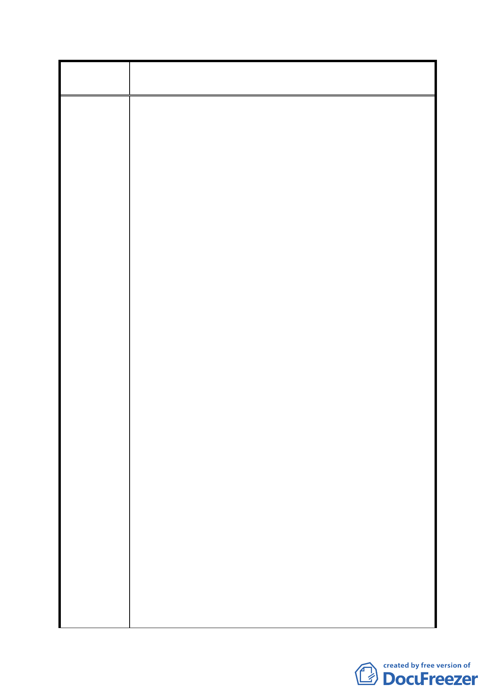

案
名
修訂臺北市「基隆河（中山橋至成美橋段）附近地區土地使
用分區與都市設計管制要點」（北段地區）計畫案
地使用強度，且大彎北段公展案已規範至少 一、二樓需
作為原計畫商業使用，並規範於申請開發作住宅使用
時，須於建築基地內提供具有公園、綠地或廣場性質之
公共設施。顯然本次大彎北段公展內容已維持了商業區
及娛樂區主要軸帶之商業活動內涵，且已提供因放寬住
宅使用所衍生之必要公共設施，已兼顧了都市發展、市
場開發效益及社會公平。因此應無限制「作附表1指定使
用項目之容積樓地板面積應達申請基地總容積樓地扳面
積之二分之一以上者，始得就該指定使用項目之容積樓
地板面積適用本項綜合設計放寬規定獎勵」之必要。
五、若規範最小建蔽率為50％時，因本計畫商業區、娛樂區
申請開發作住宅使用時，須於建築基地內提供具有公
園、綠地或廣場性質之公共設施，且本項公共設施面積
不得納入「綜合設計放寬規定」之「有效面積」計算；
因此於引用綜合設計放寬獎勵之規定時，將有無法設計
之實務困難，且影響建築設計彈性與開放空間之品質。
六、（一）本區原屬都市計畫容積移轉實施辦法第九條第二
項所稱「都市計畫指定地區」，移入容積上限為接受基
地基準容積40%，較一般地區之30%為高，料係因本區屬
低密度開發地區（最高容積積率僅250%），容許移入較
高之容積亦不致造成開發強度過高現象。上揭修訂擬將
其上限大幅下修至20%，較諸一般高密度開發地區容積移
轉上限尚且維持30%，殊不公平。
（二）已辦理容積移轉之基地，將不符本次公展之新計畫
內容，勢將造成執照搶建，或須將容積再次移出之窘境。
同時適用容積移轉者不得超過基準容積之2O％ 之規
定，將大幅影響開發成本而影響開發意願。
七、面臨計畫道路可獨立經營之店面及樓上商業使用之負責
人辦公室等均經常有獨立設置廁所或茶水間之需求；且
需考量夜間加班之婦女於使用集中留設廁所之方便性與
安全風險。建議可於都市設計審議時，視各送審之規創
設計案內容合理性與基地條件，逐案審查即可。
- 66 -